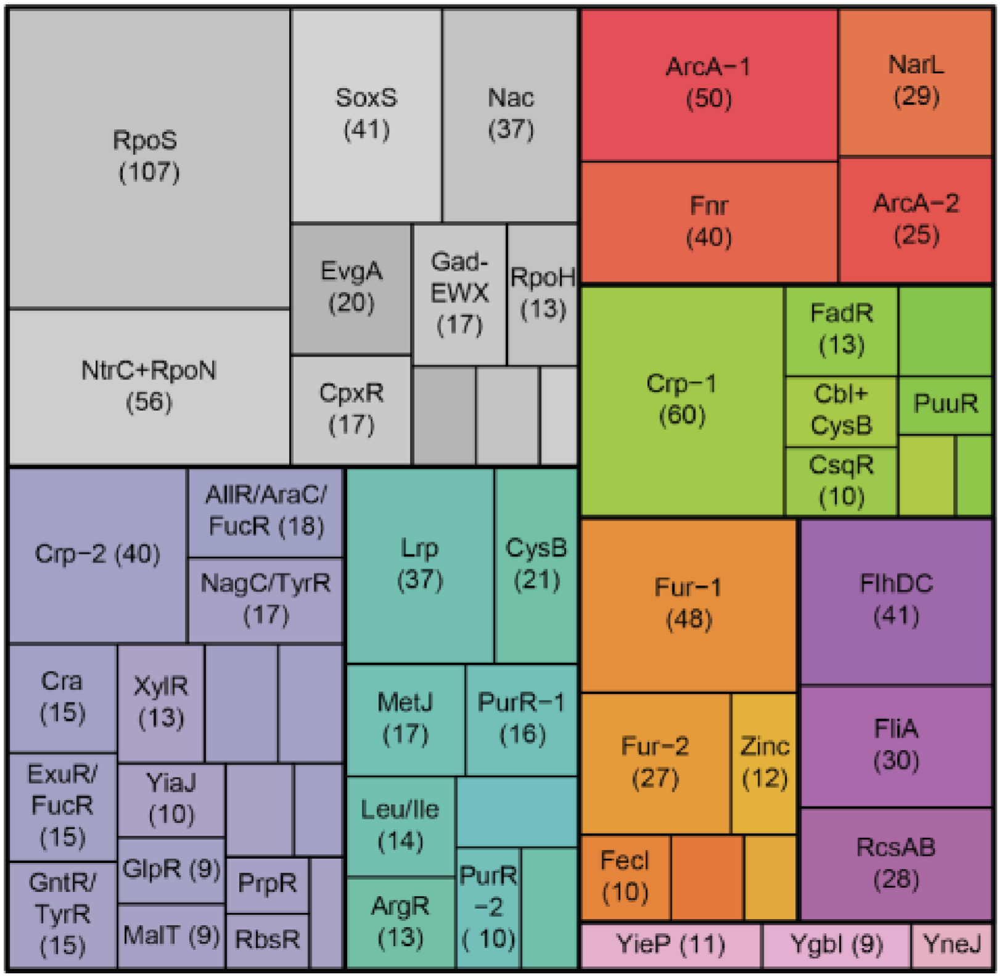

Modulytics
Independent Component Analysis of Bacterial Transcriptomes
or
Choose a Dataset Below
E. coli
Precision RNA-seq Expression Compendium for Independent Signal Exploration (PRECISE)
Sastry, et al., 2019
ViewPrecision RNA-seq Expression Compendium for Independent Signal Exploration (PRECISE)
Sastry, et al., 2019
View